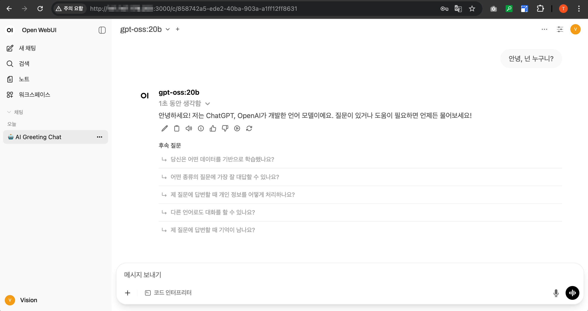
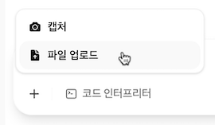
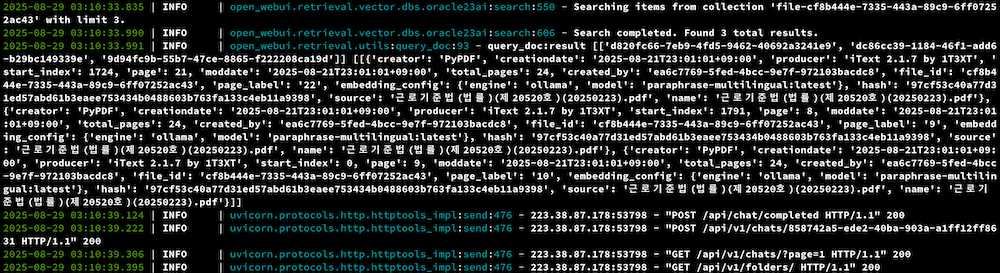
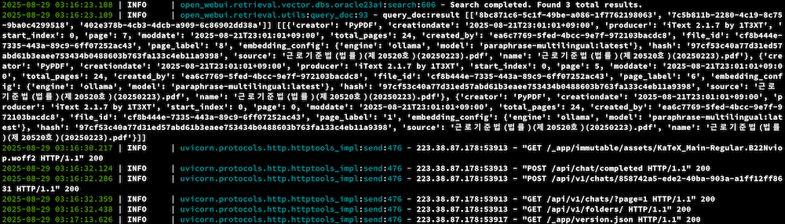
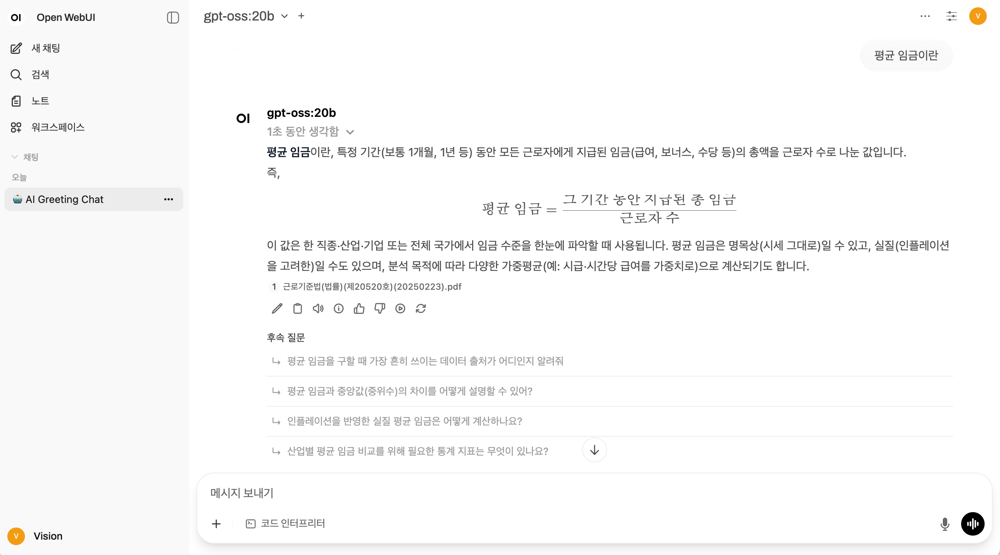

OpenAI gpt-oss를 GPU기반 OCI Compute VM, Oracle 23ai로 구성하기
OpenAI가 8월 5일에 오픈 웨이트 추론 모델 2가지를 출시 하였습니다. 두 모델을 아래와 같이 설명하고 있습니다.
- gpt-oss-120b: 핵심 추론 벤치마크에서 OpenAI o4-mini와 거의 동등한 결과를 달성한 동시에 단일 80GB GPU에서 효율적으로 작동
- gpt-oss-20b: 일반 벤치마크에서 OpenAI o3‑mini와 비슷한 결과를 제공하며, 단 16GB 메모리의 에지 디바이스에서 실행할 수 있음
VRAM 80GB, 16GB는 맥북 Apple Silicon 기준으로도 아주 고급사양에서 구동이 가능합니다. 가지고 있는 M1 Pro 16GB에 구동해 본 결과, hello에 대한 응답도 한참이 걸립니다. 사용하지 못할 수준입니다.
6GB GPU (VRAM)에 해당하는 OCI Shape을 보면, 비용을 고려하면 VM.GPU.A10.1, VM.GPU2.1, VM.GPU3.1이 해당합니다. 다만, 아래 문서에서 GPU shapes 항목을 보면, VM.GPU.A10 시리즈만, 인스턴스를 중지하면, 비용이 발생하지 않아, 테스트를 위해 VM.GPU.A10.1을 사용하려고 합니다.
환경 준비
- private subnet과 public subnet이 있는 VCN을 준비합니다.
- public subnet에 Compute VM을 생성합니다.
- 이름:
openwebui - OS: Oracle Linux 9
- Shape: VM.Standard.E4.Flex, 1 OCPU, 16 GB
- 이름:
- private subnet에 Compute VM을 생성합니다.
- 이름:
gpt-oss - Shape:
VM.GPU.A10.1- 최하단 Oracle and Nvidia Terms of Use 체크할 것
- OS: Oracle Linux 9, Gen2-GPU-최신 빌드 이미지
- Boot volume: 100GB
- 이름:
gpt-oss VM 구성
-
SSH로 접속하여
nvidia-smi를 실행하여, NVIDIA 드라이버가 설치되어 있는지 확인합니다. -
Ollama를 설치합니다.
curl -fsSL https://ollama.com/install.sh | sh -
모델을 다운받고 실행합니다.
ollama run gpt-oss:20b -
리모트에서 연결할 수 있도록 추가 작업을 합니다.
-
다음 파일을 엽니다.
sudo vi /etc/systemd/system/ollama.service -
다음 한 줄을 추가합니다. 이미 Environment이 있으면, 그 다음에 한 줄 더 추가합니다.
Environment="OLLAMA_HOST=0.0.0.0" -
재시작합니다.
sudo systemctl daemon-reload sudo systemctl restart ollama -
0.0.0.0:11434 또는 :::11434로 수신하고 있는 확인합니다.
netstat -an | grep 11434
-
-
OS 방화벽을 개방합니다.
# OS 방화벽에서 Ollama용 포트, 11434 포트 개방 sudo firewall-cmd --permanent --add-port=11434/tcp # 방화벽 변경정보 다시 반영 sudo firewall-cmd --reload -
인터넷 연결을 끊으려면, 속한 서브넷의 라우팅룰에서 NAT Gateway를 제외합니다.
-
속한 서브넷의 보안 규칙에서 Ingress Rule에 11434 포트를 추가합니다.
-
이후 사용할 Embedding 모델을 다운로드 받습니다.
ollama pull paraphrase-multilingual:latest
Open WebUI VM 구성
Oracle Database 23ai 준비 - Free Container Image 기준
-
Oracle Database 23ai Free 컨테이너 이미지 다운로드
docker pull container-registry.oracle.com/database/free:latest -
Oracle Database 23ai Free 컨테이너 시작
-
Linux
docker run -d \ --name oracle-free-23ai \ -p 1521:1521 \ -e ENABLE_ARCHIVELOG=false \ -e ENABLE_FORCE_LOGGING=false \ -e ORACLE_PWD=Welcome123456 \ container-registry.oracle.com/database/free:latest
-
-
컨테이너 로그에서 기동 완료 확인
$ docker logs -f oracle-free-23ai ... Version 23.9.0.25.07 The Oracle base remains unchanged with value /opt/oracle ######################### DATABASE IS READY TO USE! ######################### ... -
sys 유저로 컨테이너내 sqlplus로 접속
docker exec -it oracle-free-23ai sqlplus sys/Welcome123456@FREEPDB1 as sysdba -
vector 유저 생성 및 권한 부여
CREATE USER demouser IDENTIFIED BY Welcome123456 DEFAULT TABLESPACE users TEMPORARY TABLESPACE temp QUOTA UNLIMITED ON users; GRANT CONNECT, RESOURCE TO demouser;
uv로 설치하는 경우
-
uv 설치
curl -LsSf https://astral.sh/uv/install.sh | sh -
Oracle 23ai 사용을 위한 환경 변수를 설정합니다.
export VECTOR_DB=oracle23ai export ORACLE_DB_USER=demouser export ORACLE_DB_PASSWORD=Welcome123456 export ORACLE_DB_DSN=localhost:1521/FREEPDB1 # paraphrase-multilingual:latest의 dimension에 맞춰 설정 export ORACLE_VECTOR_LENGTH=384 -
Ollama Model을 사용하기 위한 환경 변수를 설정합니다.
export OLLAMA_BASE_URL=http://10.0.1.136:11434 export RAG_EMBEDDING_ENGINE=ollama export RAG_EMBEDDING_MODEL=paraphrase-multilingual:latest -
추가로 필요한 설정합니다.
export DEFAULT_MODELS=gpt-oss:20b -
기본 포트는 8080입니다. 변경하려면, 먼저 OS 방화벽을 개방합니다.
sudo firewall-cmd --permanent --add-port=3000/tcp sudo firewall-cmd --reload -
속한 서브넷의 보안 규칙에서 Ingress Rule에 3000 포트를 추가합니다.
-
Open WebUI를 시작합니다.
DATA_DIR=~/.open-webui uvx --python 3.11 open-webui@latest serve --port 3000 -
웹브라우저에서 서버로 접속합니다.
http://{openwebui-VM-Public-IP}:3000 -
첫 접속시 화면을 따라 Admin 유저를 생성합니다.
-
Ollama와 연결이 잘 되었다면, 기본 모델로 gpt-oss:20b가 선택된 상태로 보입니다.
-
첫 질문을 하면 아래와 같이 잘 답변합니다.

-
파일 업로드합니다. 테스트로 근로기준법 PDF 파일을 업로드하였습니다.


-
Oracle 23ai를 Vector Database로 하여 파일이 업로드 된 것을 로그로 확인할 수 있습니다.

-
평균 임금에 대해 질문하면, 업로드된 PDF가 임베딩되어 있는 Oracle 23ai 조회결과를 이용해 답변하는 것을 볼 수 있습니다.


-
실제 DB 유저로 접속해 보면, 관련 테이블과 IVF 인덱스가 생성된 것을 볼 수 있습니다.

이 글은 개인으로서, 개인의 시간을 할애하여 작성된 글입니다. 글의 내용에 오류가 있을 수 있으며, 글 속의 의견은 개인적인 의견입니다.